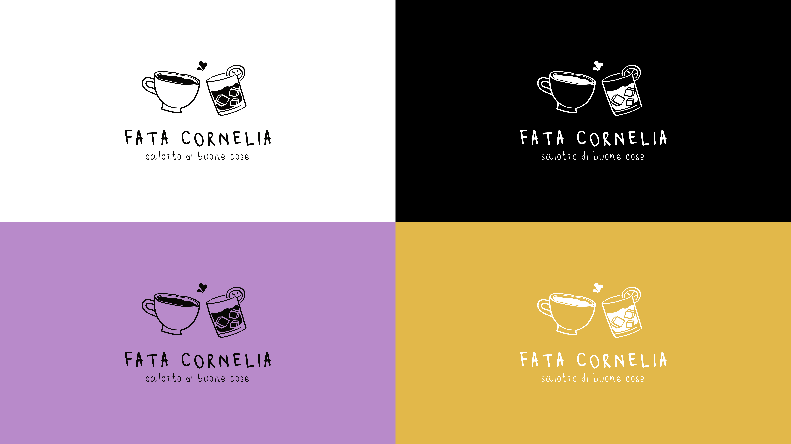
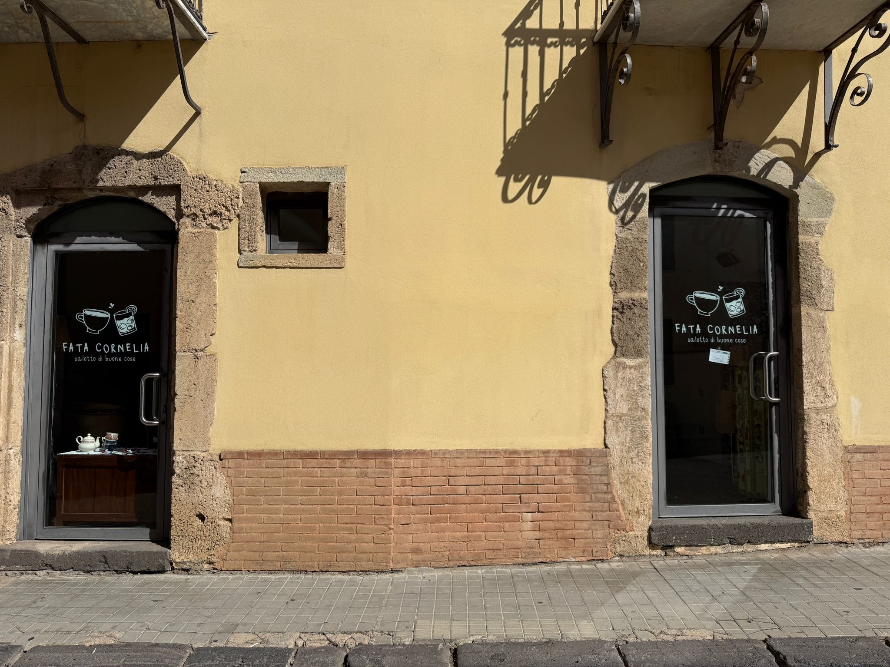
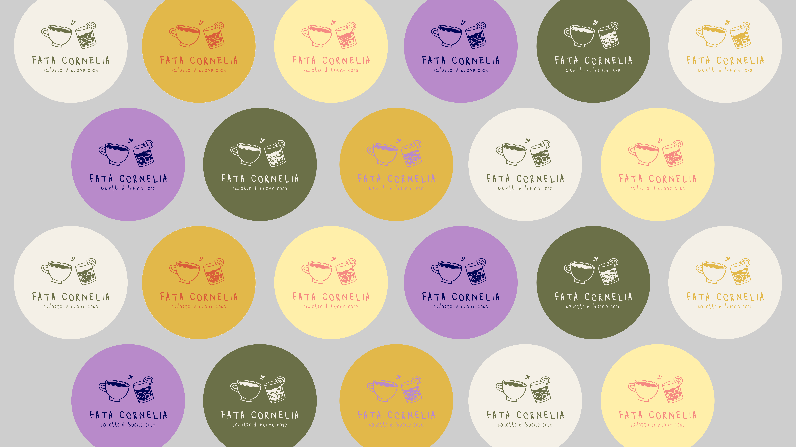
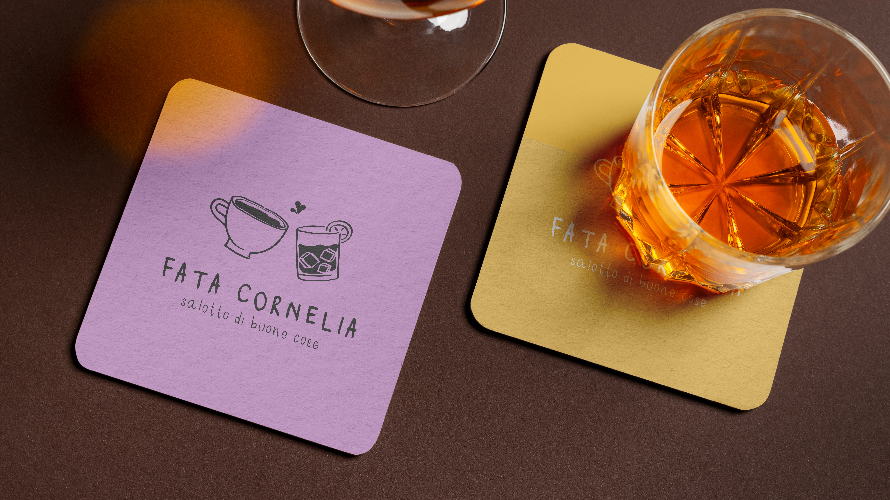

Questo progetto nasce dall’idea di creare un’identità visiva per un locale dedicato al tè e a una selezione di prodotti artigianali di qualità. L’obiettivo principale è stato quello di tradurre in forma grafica un’esperienza sensoriale fatta di calma, cura e autenticità.

Il logo è composto da un pittogramma disegnato a mano che sintetizza i concetti chiave del locale: da un lato il tè, rappresentato nella sua forma più classica, dall’altro un bicchiere con ghiaccio, simbolo dell’anima più dinamica e contemporanea legata alla cocktaileria. A completare il segno, la scelta di un lettering realizzato a mano dalla proprietaria, che contribuisce a rafforzare il carattere autentico e personale del progetto. Il risultato è un’identità visiva dal tono caldo, rustico e accogliente, capace di trasmettere immediatamente un senso di familiarità e cura artigianale.


